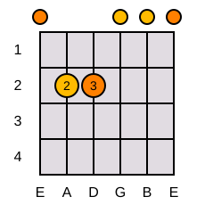
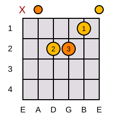
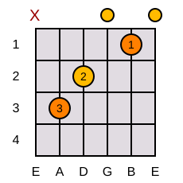
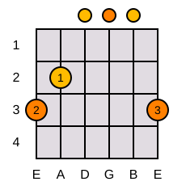
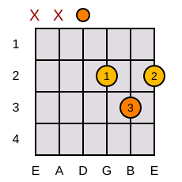
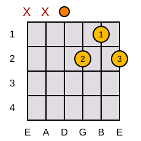

Em
E Minor
Two fingers, wide open sound. Usually the very first chord most players learn.
Everything here is broken into short, focused sessions. Pick one card, spend fifteen to twenty-five minutes with it, and move on when it feels steady — not perfect.

Two fingers, wide open sound. Usually the very first chord most players learn.

A natural next step from Em — same shape, shifted over one string.

A three-finger stretch that shows up constantly once you start playing full songs.

A bright, full-sounding chord that pairs well with C and D in a huge number of songs.

A triangular finger shape near the top three strings — small movements, big payoff.

A one-finger tweak from D that adds tension — common in blues and folk progressions.
The simplest possible pattern — four even downstrokes per measure. Good for locking in timing.
A classic folk-pop pattern that fits a large share of beginner songs once it feels natural.
Loaded from the song library — filter by difficulty, star your favorites, and log a song once you've practiced it today.
Loading songs…